Imagine if you as a student could have traveled somewhere new every year. How would those experiences have changed you? What if you could have walked the halls of the White House, explored Japan with a bullet train, climbed the pyramid of an ancient Mayan city, or seen the real beaches of Normandy? These school trips are more than just learning about some famous person, place or thing. Travel helps students empathize with the perspective of other cultures, develop independent living skills, and connect with what they’re learning about at a deeper level. More importantly though, travel has the power to expand a student’s mind about what’s possible when they leave the comfort of their own neighborhood.
Unfortunately, financial constraints regularly place trips out of reach for the majority of students. TripSprout aims to solve this problem by giving teachers a platform that puts the power of funding back in their hands to make any amazing travel experience possible.
The Budget Dilemma
TripSprout was born out of my personal frustration as a teacher with finding the capital and resources for student travel. Even making short field-trips happen always felt like an uphill battle. With school district budgets continuing to shrink to the bare minimum, most teachers are left with fundraising options that produce small margins for large time investments.
You could run a bake sale, but these represent a fraction of what you typically need. You can go soliciting donations from local businesses. Many teachers go this route. However, it’s another huge time requirement beyond already inflated professional responsibilities. There are plenty of food and novelty companies that love to get students to market their products. But lets be honest, when a kid asks if you’d like to buy a magazine subscription, or 10 rolls of wrapping paper, most adults don’t really want the product or to pay the premium price. Yet, we buy it anyway. Why? Because we want to help the student; we want them to have this invaluable experience and we believe our purchase will help them get there.
Thinking about the power of social media and sites like Kickstarter or Indiegogo, I started to dig into the concept of a fundraising app purely focused on travel. Instead of relying on the “middlemen” profit-sharing programs, or the efforts of one teacher to solicit donations, why not create a platform that put the power of crowdfunding into the teachers (and students) hands?
If You Build it, Will They Come?
After some initial brainstorming, I began with a competitive analysis of similar products aimed at funding teacher related goals. Among the most popular were donorschoose.org and Adopt-a-Classroom.
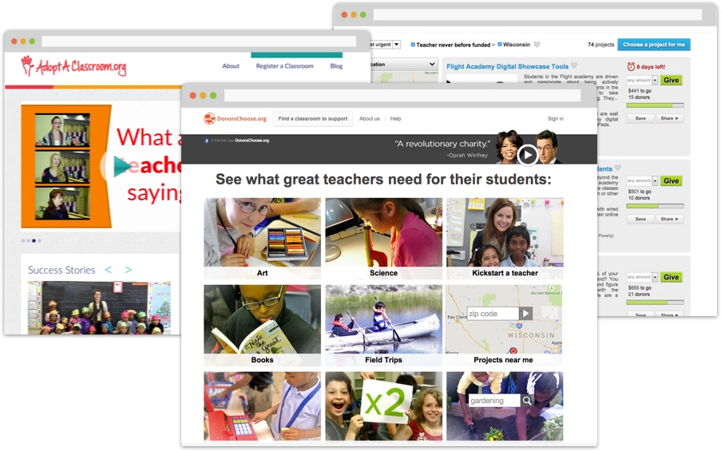Both of these sites had generated millions of dollars for teachers and multiplied the efforts of thousands of ordinary donors for some truly great projects. However, neither really had a niche that catered to big student travel experiences. Instead, donorschoose focused on the small school-day field trips and Adopt-a-Classroom was only geared toward general classroom and project supplies that teachers would normally have to buy on their own.
Clearly, a market seemed to appear for a new tool like TripSprout. At this stage though, the concept needed further proofing from the real stakeholders.
As a one-man UX team, I created a survey to understand teacher attitudes and needs in a few key areas of the product.
- Beliefs towards the merit of planning trips
- Perceptions about fundraising options
- Past actions regarding planning trips
- Future goals for planning trips (if there were no limitations)
- Attitudes towards using a fundraising app vs traditional methods
If I had more time and resources for the user research portion of this phase, I would have prefered to increase the sample size beyond 20 responses. However, after surveying colleagues at work, through Facebook and an online teacher forum, I thought the results were particularly revealing despite the small number of users.
- 85% prefer to donate directly to a student rather than buy a product
- 55% would like to organize international travel if there were no funding limitations
- 55% would organize 1-2 trips per year and 40% would organize 3-4 trips per year if securing funding was easier
- And if they could use an online tool to collect donations, over 80% responded as more likely to organize trips within a given year
Designed For A Teacher By A Teacher
Being a former high school teacher, it was exciting to see my colleagues confirm this concept to fund more trips. With my background in social studies education, I also had a particular excitement about being able to take students to all of the places we learned about. However, as a user of this product myself, I needed a way to guard against my own biases. The following user personas were created to develop a clear picture of the goals, needs and motivations of the teachers I was ultimately designing TripSprout for..
Writing the user flows narrowed the scope of the project through identifying the features most important for initial deployment. You’ll notice that personas for donors were absent from the examples above. While I knew that donors were the other half of the equation to the success of TripSprout, I also recognized that at that point I just didn’t have the time or user research to properly address the design of tasks related to the donor user flow. However, this would be a critical component to address in a real product launch.
Mapping Out the Identity
By now I’ve given you the impression that TripSprout was part of the concept from the beginning. However, the name only came after rounds of sketching, reflection, and letting ideas “slow-boil” (as Von Glitschka describes in his logo design process).
The first concept was moving in the direction I wanted, but as my mentor Chris hilariously pointed out, it was “something that sounded like an orwellian government initiative.”
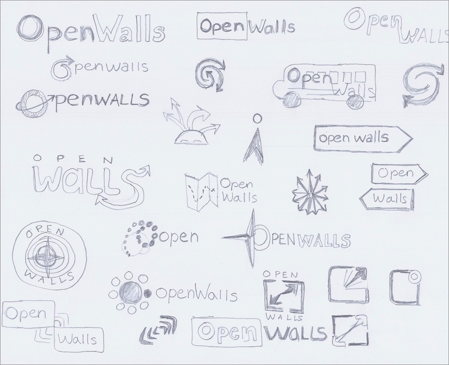I was trying to convey the metaphor of the travel as a way to bridge the gap that sometimes exists between the classroom and the world outside a little too literally. It was a start though.
Eventually, TripSprout came to fruition. I’ll admit, it was one of those midnight flashes of insight that I scribbled down on a notepad on my way to bed, but I think it resulted from following the process without forcing the execution.
"Trip" makes it clear that the fundraising platform is only focused on travel. "Sprout" represents the concept of literally growing the idea (seed) that the teacher organizes for their students through donations. As in nature, there could be a downpour of rain where huge growth occurs in a single bound, or a few minutes of sunlight that moves the plant closer to blossoming. Thus, maybe a donor from halfway around the world contributes $1,000 to the goal, but that doesn’t diminish the collective domino effect of every student's family member contributing $5 to the campaign. Teachers want a travel experience to sprout bigger worldviews, expanded ways of thinking, and foster new understandings of people and places.
I opted to pursue the Globe concept from the sketches in addition to the visual of growth as denoted by the plants. The exploration of the map icon developed through some excellent mentor-mentee collaborative discussion because of its ubiquitous nature in digital mapping and travel tools.
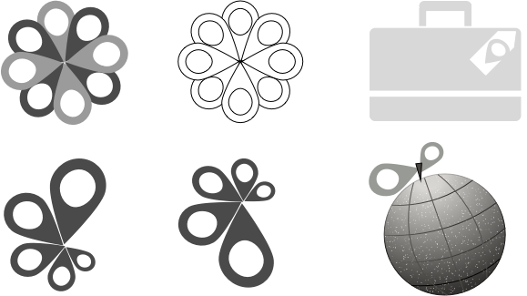The color palette needed to reflect the diversity of the places teachers could organize trips to. I believe a splash of complementary colors appropriately sends that message without becoming overwhelming and they work together by reinforcing the feelings of excitement and energy.
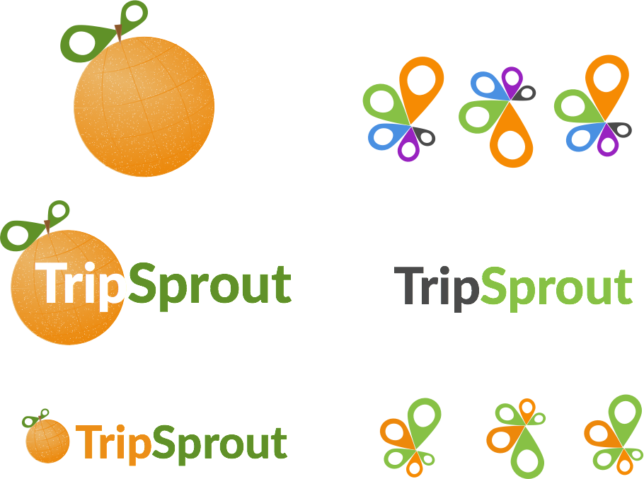In the end, I felt both logos successfully conveyed the meaning behind TripSprout. The second mark won out though. It was a stronger representation of travel, the personal growth of students, and the growth of the trip from possibility to reality thanks to crowdfunding.
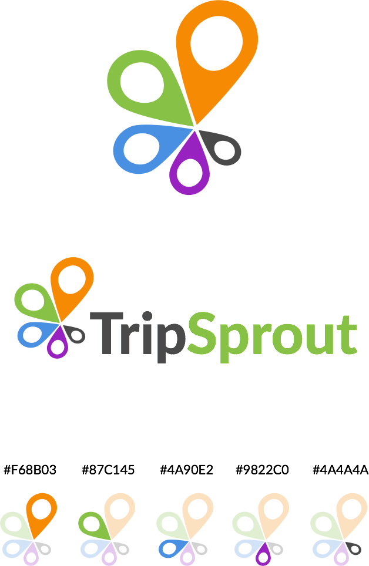I selected Lato for the site typeface architecture (and logo design) as it reminded me of the highly legible type that you see on wayfinding signs at airports and railway stations. Lato also has a lot of superb weights that can be used to create hierarchy and emphasis throughout the copy.
However, I also wanted to give the design touches of individual personality to help users feel more connected to the product. The script typeface FF Market does this nicely with its unique curvature and without sacrificing legibility. It’s like you’re looking at the greetings printed on those postcards your friends used to send to you while they were off visiting some exotic destination. Fonts are distributed via TypeKit.
Finessing the Design Direction
From the beginning, I knew the wireframes had to focus on two goals; telling the stories behind trips created through TripSprout and making it easy for teachers to manage the content and fundraising campaigns.
To aid in storytelling, ample space was allocated to large hero images and quotes that would help users personally connect with the product. Their own inspiration and desire to go to these places and embody the message of the quote could potentially translate into action. Space for these beautiful and bold images were carried through the teacher dashboard as well as campaign pages donors would see.
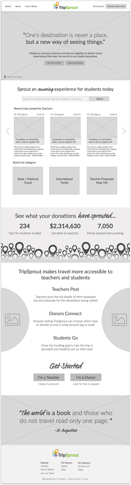Space for these beautiful and bold images were carried through the teacher dashboard as well as campaign pages donors would see.
Beyond the dashboard page, the heart of TripSprout is really a content editor. This is where a teacher can tell their story and make a passionate connection with donors (i.e. describe why this trip matters and how it will benefit students). The first iteration of the “Create” page wasn’t allowing this to happen. There was too much focus on logistical information and media.
Create Trip Editor v.1
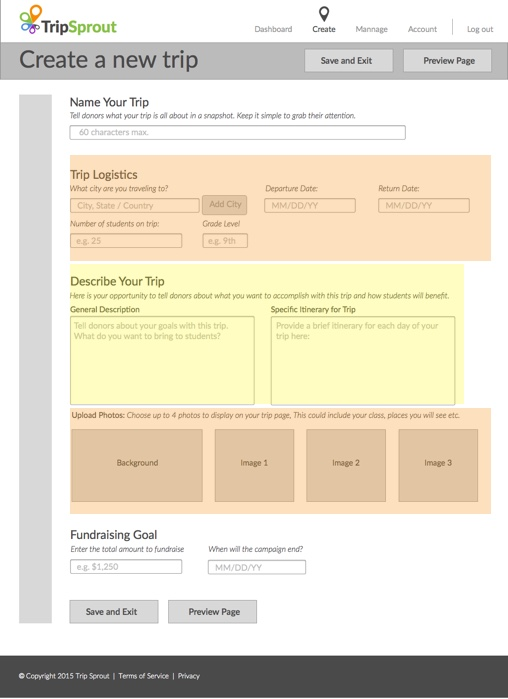Create Trip Editor v.2
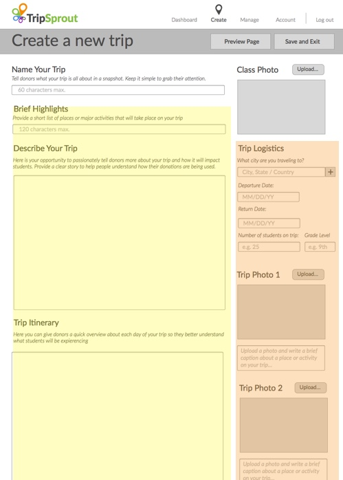Images of the destination, plans and students draw the visitor in, but it's the content that will compel users to click and donate. To properly focus user action, descriptive fields were given center stage, just as you would find in a blog post editor, while logistical information was pushed aside to the right. This way, the user is prompted to spend more time writing about the trip rather than completing a generic itinerary.
Additionally, I decided to give teachers more control over the donation call to actions. Here, teachers could describe, and donors could then see exactly how each contribution would directly help a student. A donor can internalize the fact that their $20 could help a student see the White House (and maybe even meet the President!). It’s less incentivizing for an individual to contribute when they don’t understand how their donation is being used; this is especially true if the donor has no personal connection to the classroom teacher or students.
Analytic information, displayed in counters and charts, gave teachers the ability to quickly monitor campaign progress without wasting time. This also made it clear to donors just how close or far away a campaign was to being funded successfully.
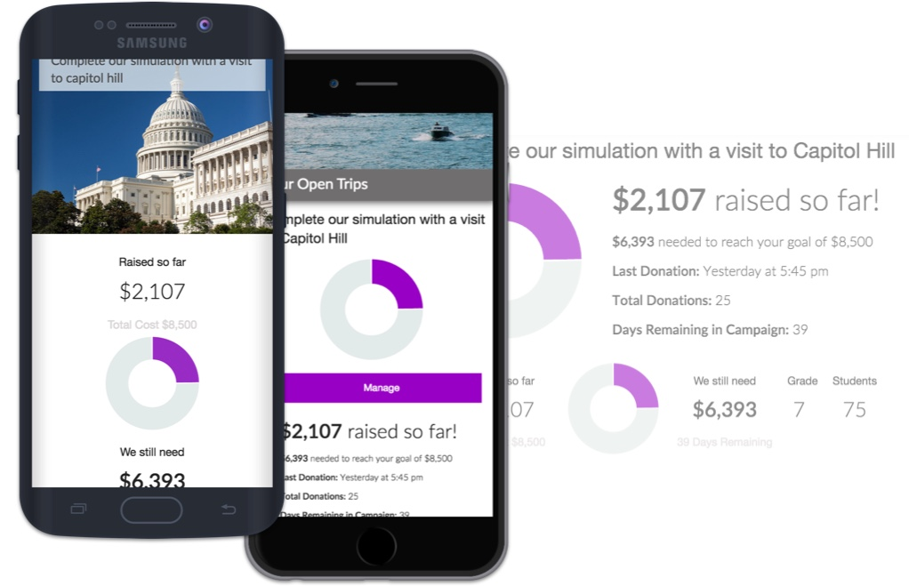One high-fidelity mockup of the homepage set the final calibration to the compass. Since most of the other page designs were borrowing styles from the homepage, it was more efficient to move into the development phase, designing later iterations in the browser, rather than testing everything out inside of static mockups.
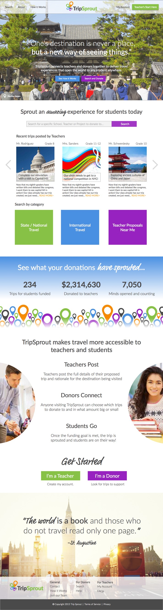Getting SASSy with Foundation
For the development phase of TripSprout, I utilized the power of the Foundation framework. Until this project the only other framework I used for frontend development was Skeleton. I liked the lightweight approach of Skeleton, but I wanted to learn one of the most popular frameworks in use (besides Bootstrap), and I needed more powerful control over the responsive design for TripSprout.
Foundation also integrated nicely with SASS. I had some exposure to SASS through Treehouse before and I remembered how much it amazingly simplified writing CSS. Plus, TripSprout was going to require numerous media queries to make the site responsive across all devices. SASS makes that part of the CSS workflow much less painful (always best to work smarter, not harder, right?).
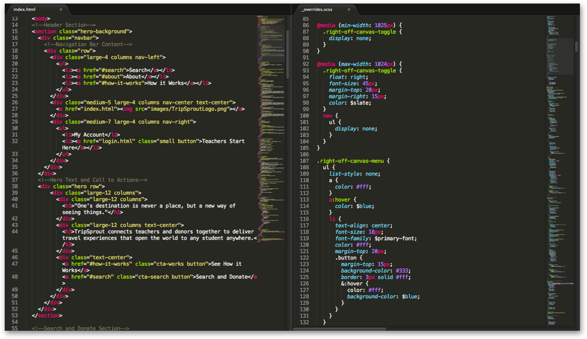Foundation wasn’t a breeze at first, but I quickly picked up speed. And, even with SASS’s initial learning curve, knowing this preprocessor has significantly decreased development time in my workflow. Is my code as DRY as it could be? Probably not, but I think it’s come a long way (especially with mixins and variables!).
Adding a little Javascript was the final development hurdle to overcome. I haven’t had a lot of time to spend with Javascript (though it’s a goal to improve on it), so it was personally challenging to implement Chart.js to handle the small pie chart progress indicator. The final execution is better for it though and it was exciting to see an element of the design become alive and somewhat interactive rather than a static PNG for the prototype.
Lessons Learned
TripSprout was a labor of love. The project helped me to stretch in ways I had never anticipated growing and I’m a better designer today because of the work I was challenged in BLOC to complete. Personally, it also marks the transition from my career as a classroom teacher, to that of a UX Designer. I’m proud of the skills I developed and the tools I learned designing this fundraising app, but I’m also proud of the way I was able to honor my past experiences as a teacher with the goals I have in mind as a UX Designer in the future.
Looking at the future evolution of the project, I would focus on the UX, UI and development of the donor user flow; specifically searching for projects and the shopping cart experience of donating (donorschoose.org has a fantastic UX flow there). I would also like to explore learning more Javascript to prototype what it would look like for teachers to share campaigns via social media and to thank and connect with donors who contributed to each trip.
I believe TripSprout is actually a viable concept. It needs more user testing of course, but I’ve seen how travel experiences open doors for students. Talking with a set of parents at my last conferences, they commented to me how much their daughter loved going to the Model United Nations conference in Milwaukee, WI that I organized for students. They said she couldn’t stop talking about it at dinner. To give you perspective though, to bring 18 students to an overnight conference a little over an hour away from our town cost nearly $2,500. It was worth every penny, but most of that money had to come from parents. Well, what about all of those students who could have benefited, and their parents couldn’t afford to make a contribution? I wish I had a tool like TripSprout at that time.
Who knows, maybe I’ll partner with others and begin a startup someday. For now though, I’m content with the wealth of knowledge I walked away with as a UX Designer.
Thanks for reading about my process,
Justin